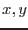
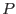
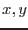
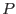

Although the task is non-XMM specific, it is primarily intended to generate maps of the background in XMM EPIC images. The task does this by fitting a linear combination of background-model component images. The task takes three main inputs (see section 6 for details): (i) the Poissonian FITS image which is to be fitted; (ii) a list of  model component FITS images; (iii) (optionally) a FITS mask image. The output is a single FITS image which represents the best-fit background model. The best-fit amplitudes
model component FITS images; (iii) (optionally) a FITS mask image. The output is a single FITS image which represents the best-fit background model. The best-fit amplitudes
 and the names of the component datasets are recorded in this output dataset in a binary table extension.
and the names of the component datasets are recorded in this output dataset in a binary table extension.
Clearly all the input images must have the same dimensions: call this  pixels.
pixels.
The fitting is done by minimizes the maximum-likelihood estimator  defined as follows:
defined as follows:
where  is the vector of
is the vector of  component amplitudes, and the sums are understood to be over all unmasked image pixels. Suppressing the  subscript for the sake of brevity, the Poissonian probability  is given by
component amplitudes, and the sums are understood to be over all unmasked image pixels. Suppressing the  subscript for the sake of brevity, the Poissonian probability  is given by
where the total background model  is the linear combination of the
is the linear combination of the  components
components  , viz
, viz
and  represents the value at that pixel of the Poissonian image. Inserting equation 5 into 1 gives
represents the value at that pixel of the Poissonian image. Inserting equation 5 into 1 gives